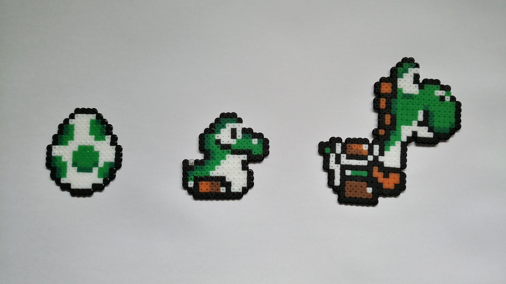
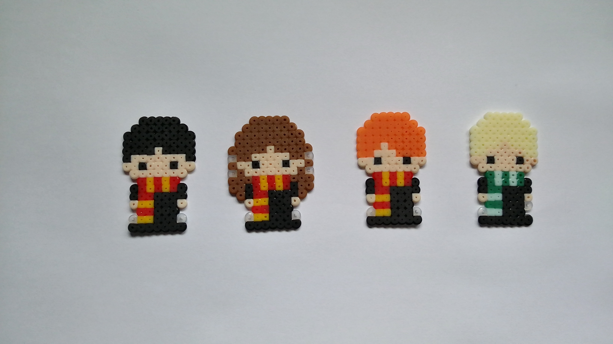
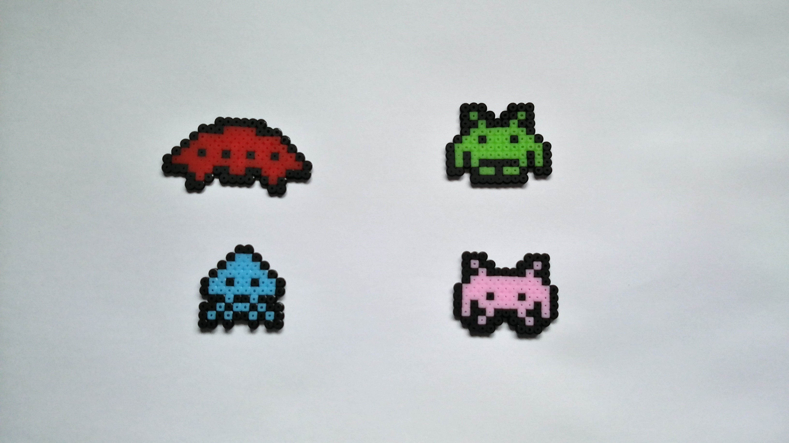
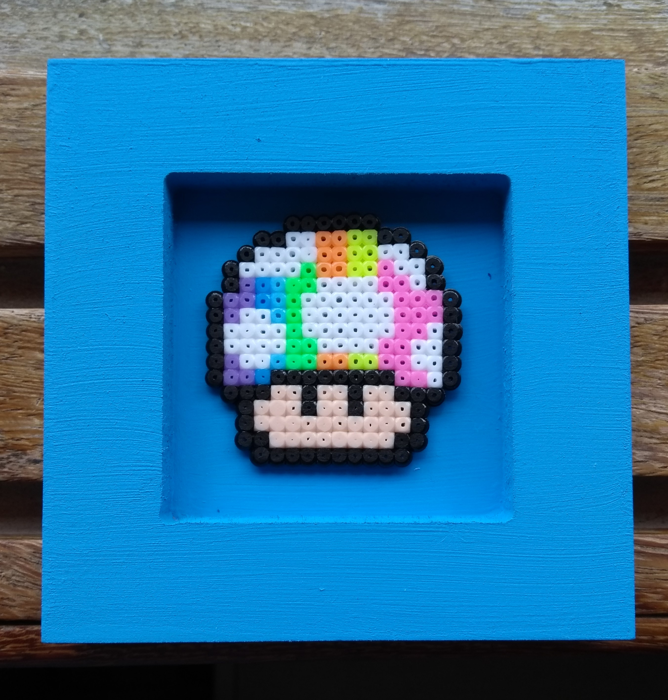

Voltar para a Página Inicial
Nossos produtos são feitos de maneira artesanal com foco na cultura pop. Desse modo, são utilizados, principalmente,
temas que envolvem games, séries, animes e HQs. Em caso de encomenda, o cliente tem a liberdade de escolher
o tema que será desenvolvido em pixel art.
Conheça nossos produtos
Como são feitos os nossos produtos?




Como são feitos os nossos produtos?
- Você escolhe a imagem (pixelada) e o formato desejado (ver
Valores);
- Com o auxílio de uma pinça, os beads são colocados sobre uma placa própria para essa atividade(
pegboard);
- Ao término da construção da imagem, coloca-se uma folha de papel manteiga sobre o
pegboard com os beads;
- Com cuidado para não deslocar os beads, passe o ferro de passar roupa, em temperatura alta, suavemente sobre
o papel vegetal, de modo a derreter os beads;
- Retire a peça do
pegboard com cuidado e a coloque embaixo de algum objeto liso e pesado (Ex.: um livro);
- Após alguns minutos, a peça estará fria e pronta para ser fixada no formato desejado.
Voltar ao topo